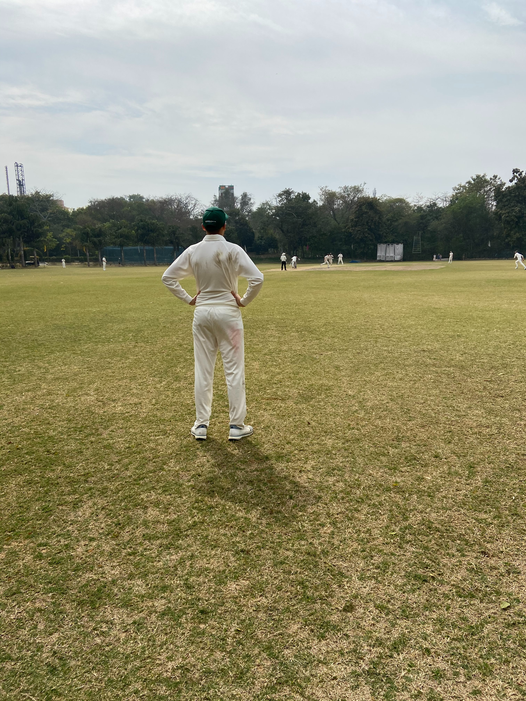

Get to know
Me!
Hi, I am Varun. I am a data scientist
Jumping off an airplane
from 3000 feet (alone)
45 mins before the jump, our leader, his team and the jumpers sat in a circle for the final briefing. We were going to pick the order of jumps. For the initial jumps the pairs would be one professional along with one rookie. Guess who volunteered to jump off the plane first amongst the rookies? You guessed it. So they put the heavy parachute bag on me and we proceeded towards the aircraft. There was capacity for 4 people in the plane. I was instructed not to look down but guess what I did? I couldn't miss this, I wanted to experience every moment of this jump.
I followed the instruction to the very last detail and when the jumpmaster said JUMP , I let go. there was a freefall for 5 seconds precisely (we had to count loud enough for them to hear us on the ground). After the parachute opening, it was like flying like a bird. I could literally see part of Singapore from up there. I was supposed to land in 7 minutes. It took me 9. Our leader gave us instructions on which way to steer the parachute and when to brace for landing.
Here is what I think of Skydiving - Everyone is afraid of heights, Everyone is scared; jumping off the plane is daunting. You are not the only one. All you have to do is take that leap of faith and FLY.....
Life is better in hiking boots
The best view comes after the hardest climb.


Travelling
Santa Fe
Carpe Diem
Hrishikesh, INThe start to my first heart throbbing adventure was after a peaceful, serene ride on a royal enfield from Dehradun to Hrishikesh. This jump was straight into the valley of 83 meters. I was instructed to have my arms wide out and on the count of three. I was told specifically if you hesitate you won't be able to jump.
After my instructions were the most difficult baby steps till the edge of the platform. I was told not to look down. DO NOT LOOK DOWN. Yeah right, as if I am going to miss that. My jump went something like this.
This was without a doubt, the best experience of my life
Cities I've lived in
- Nashik, IN
-
Nashik was once called pilgrim city but now its called the wine city. Having spent my childhood in the city, I know the best spot to look at sunrise and the best place to eat Missal.
- Pune, IN
-
My time in Pune was me learning to be independent. I moved to Pune to work for my first job. While I spent 10+ hours a day in the office and weekends coping up with the work, my time in this city was me learning how to be a man. Pune represents Maratha's Pride. There is a vibe to the city that will make you fall in love with it instantly.
- Kuala Lumpur, MY
-
Ask me about the best sushi resturant in Kuala Lumpur and the best view of the Twin Towers. This was when I was being paid for interact with investment banks personnel and make softwares for them. This was a dream job: Waking up; Working out; Buffet breakfast; Put on your best clothes (shiny formal shoes); Work with high profile clients; Code; Dinner with friends; Swim at a 5-star pool; Repeat.
- Charlotte, NC
-
Queen city was my port of entry in the United States in search of The American Dream. I was fortunate to contribute to several projects to improve the city. Apart from offering, benefits of a big city, you would love Charlotte's weather. Charlotte has the best burger joint ever.
- Austin, TX
-
"Record scratches" ...and this is my hometown right now.
Favourite Quote
Yesterday is history, tomorrow is a mystery, but today is a gift. That is why it is called the present. - Master Oogway
If you look for the light, you can often find it. But if you look for the dark that is all you will ever see. - Uncle Iroh
How I currently spend my day
Quarantined
| Item | Description | Time |
|---|---|---|
| 1 | Connecting with people on LinkedIn. | 12.5% |
| 2 | Learning how to cook. | 5% |
| 3 | Solving problems | 12.5% |
| 4 | Practicing Machine Learning. | 12.5% |
| 5 | Applying to jobs on LinkedIn. | 12.5% |
| 6 | Working out at home. | 4% |
| 7 | Praying Corona Virus goes away. | 100% |
Fitness
Meditating like a Monk
This honestly, is the toughest thing I have to do. It is so difficult for me to sit in a place and concentrate on something. One thing. I tried to concentrate on breathing; installing mediatation apps; listening to mantras. Nothing worked. Then I realized, meditation is my time for myself. I give myself 10 mins to sit and do nothing. If during that time, a random thought comes to my mind, I let it flow without opposing it. This method has really helped me. 10/10 would recommend meditation to everyone.
Going bERserk in the Gym
faucibus vestibulum. Blandit adipiscing eu felis iaculis volutpat ac adipiscing accumsan eu faucibus. Integer ac pellentesque praesent tincidunt felis sagittis eget. tempus euismod. Vestibulum ante ipsum primis in faucibus vestibulum. Blandit adipiscing eu felis iaculis volutpat ac adipiscing accumsan eu faucibus. Integer ac pellentesque praesent. Vestibulu
Soccer & Cricket
Cricket is a religion in India and my passion for the sport is no different. I started playing cricket at a very young age (most Indian boys do). But in 7th grade, I decided to take up this sport seriously. I started as an middle order Batsman for my beloved club SCGA . Every SCGA player will tell you they worshipped our coach. Because he was that good. It was under guidance I played and represented my city in the under 17s team. For me, cricket always has been not about hitting the ball furthest or bowling the quickest. I love cricket because while I am on the field, and the bowl would come towards me, for a split second, I'd fly; dive to get the ball. Fielding, the acrobatics, the atheleticism is what this sport is all about to me.
Soccer (Football, I am just going to refer it as Football) is my favourite sport to watch. I started playing while I was in my freshman year. Soccer taught me how to make a split second decision when the oppenent is rushing towards you. I still remember, I had a sticky note in room that said University Player. It was my dream to represent my University which has almost half a million students. Getting selected as one of top 11 players is as difficult as being part of the final clubs at Harvard. While playing for Nashik team, I made a 60 yard run with the ball and scored from 20 yards out with my weaker foot. That performance was my ticket to the final clubs. I proudly represented the University and fulfilled my dream.
Gallery

Excerpt from my paper
We begin our method by defining a sequential pattern as a sequence SP (sp1,sp2,.... sp n) where sp can be a word, a part of speech (POS tag),start or end of a question etc. In this way, we define number of patterns. But, the pattern which allows us to identify the comparative question from a set of questions and ultimately generates comparators is said to be an Indicative Extraction Pattern(IEP). The IEP thus defined will be used as a reference and the questions will be compared with the pattern. If it matches with the pattern, then it can be classified as a comparative question and the corresponding tokens are listed out as comparators. Bootstrapping algorithm allows us to define a pattern instead of manually creating the set of keywords. This ensures high precision i.e. what percentages of retrieval documents are actually relevant to the query and recall i.e. what percentage of documents relevant to the query are retrieved.
Click here to view or download the paper
Sample Code
fast = slow = head;
while(fast != NULL){
fast = fast->next;
if(fast){
slow = slow->next;
fast = fast->next;
}
}